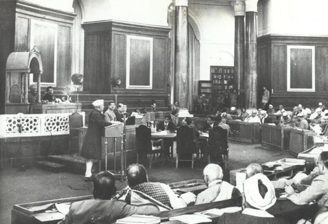
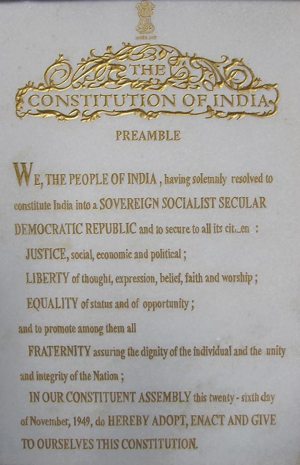

BPSC PYQ PatternCollegium & judges appointments (69th, Q1–3): BPSC asked a 3-statement question on the SC collegium — 5-member body headed by CJI + 4 senior-most puisne judges; Parliament has NOT evolved the collegium (it is a judicial creation, Second Judges Case 1993); judges are appointed only through the collegium system since 1993. BPSC loves testing myths vs reality on appointment machinery — expect similar multi-statement traps on the Constituent Assembly.
70th BPSC PYQSource provisions — Government of India Act 1935 (70th BPSC pattern): The 70th BPSC tested which provisions trace back to the GoI Act 1935 — indirect election of the President, representation of States in Parliament, the Seventh Schedule lists. The 1935 Act is called the "blueprint" of the Constitution — about 250 of its provisions were carried over. Equally examinable: the Constituent Assembly was created under the Cabinet Mission Plan 1946, NOT by an Act of the British Parliament — a classic BPSC trap.
Formation of the Constituent Assembly
1934 — M.N. Roy first put forward the idea of a Constituent Assembly for India.
1935 — INC officially demanded a Constituent Assembly (Lucknow session presided by Nehru, 1936, reiterated).
1938 — Jawaharlal Nehru declared that the Constitution of free India must be framed "without outside interference" by a Constituent Assembly elected on adult franchise.
1940 — August Offer (Viceroy Linlithgow): the British first accepted the principle that the Constitution should be framed by Indians — but only after World War II.
1942 — Cripps Mission: proposed a constitution-making body after the war, but with provincial opt-out clauses — rejected by Congress and the League for opposite reasons.
May 1946 — Cabinet Mission Plan: the actual blueprint — a three-tier scheme plus a Constituent Assembly of 389 members (296 for British India: 292 governors' provinces + 4 Chief Commissioners' provinces; 93 princely states), indirectly elected by provincial assemblies; seats allotted at roughly one per ten lakh of population, distributed among the Muslim, Sikh and General communities in proportion to population.
Elections — July 1946: indirectly elected by provincial assemblies; INC won 208, Muslim League 73, independents/others 15.
9 Dec 1946 — First sitting: 211 members attended; Sachchidananda Sinha (oldest member) appointed temporary President; with the Muslim League boycott only 211 of 389 attended.
11 Dec 1946 — Dr. Rajendra Prasad elected permanent President; H.C. Mukherjee and V.T. Krishnamachari elected Vice-Presidents. B.N. Rau was the Constitutional Adviser (he prepared the initial working draft).
Committee system: Assembly worked through committees; the Drafting Committee (29 Aug 1947, 7 members) chaired by Dr. B.R. Ambedkar is the most famous. Ambedkar = "Father of the Constitution of India"; the Drafting Committee is called a "mini-Assembly".
Other key committees: Union Powers (Nehru), Union Constitution (Nehru), States Committee (Nehru), Provincial Constitution (Patel), Advisory Committee on FRs & Minorities (Patel) with sub-committees on Fundamental Rights (J.B. Kripalani) and Minorities (H.C. Mukherjee), Rules of Procedure (Prasad), Flag Committee (Rajendra Prasad chaired the ad hoc committee on National Flag; the final design was proposed by Pingali Venkayya).
Adoption — 26 Nov 1949: the Constitution as adopted contained a Preamble, 395 Articles (22 parts), 8 Schedules; provisions on citizenship, elections, provisional parliament etc. came into force at once (Art 393); the rest commenced on 26 Jan 1950 chosen to commemorate Purna Swaraj Day 1930.
Time & cost: 2 years, 11 months, 18 days; ₹64 lakh; 11 sessions; 114 days of deliberation on the draft; 7,632 amendments tabled, ~2,473 actually discussed.

Jawaharlal Nehru addressing the Constituent Assembly of India, December 1946 — the Assembly first met on 9 December 1946.
Composition & Criticisms — fact matrix
Fact
Value
Exam trap
Total members (Cabinet Mission)
389 (292+4+93)
"385" or "348" are trap numbers
Members on 26 Nov 1949 (reduced)
299
After partition, numbers were reduced
Indirectly elected
By provincial assemblies
NOT adult franchise — critics' point
Drafting Committee size
7
Trap: "9 members" — actual size was 7
Time taken
2y 11m 18d
Trap: "2y 11m 6d" — no
First elected President of India vs Assembly President
Assembly President ≠ President of India
Rajendra Prasad was Assembly President 1946–49; President of India from 26 Jan 1950
Tribal Areas of Assam, Meghalaya, Mizoram, Tripura
12th
Municipalities (243W)
Mnemonic — 12 Schedules:S-U-P-E-R-S-T-A-R-S — States(1) Union-emoluments(2) Provisions-oath(3) Rajya-seats(4) Scheduled-areas(5) Tribal-Assam(6) Lists(7) Languages(8) Land-reform(9) Tenth-defection(10) pAnchayat(11) municipalities(12). 12th is the last word in local government.
📖 Deep dive: For the full committee-chairman grid, the demand-to-delivery timeline (1934–1950), all 12 Schedules with anchor Articles, the complete borrowed-features grid, Bihar's CA delegation, and 7 exam predictions — see Topic 38 Deep Dive: Assembly Working, Sources & Exam Predictions.
⚡ Fact Matrix — Quick Revision
Borrowed features — source table (BPSC favourite)
Source
Features borrowed
Britain (UK)
Parliamentary government, Rule of Law, legislative procedure, single citizenship, cabinet system, bicameralism, writs, CAG, parliamentary privileges
USA
Fundamental Rights, independence of judiciary, judicial review, impeachment of the President, removal of SC/HC judges, post of Vice-President
Ireland
DPSP, nomination of members to Rajya Sabha, method of election of the President
Australia
Concurrent List, freedom of trade & commerce, joint sitting of the two Houses
Canada
Federation with a strong Centre, residuary powers with the Centre, Centre-appointed Governors, Centre's power to reorganise states, advisory jurisdiction of the Supreme Court
USSR (now Russia)
Fundamental Duties, ideal of justice (social, economic, political) in the Preamble
France
Republic; ideals of liberty, equality, fraternity in the Preamble
South Africa
Amendment procedure, election of Rajya Sabha members
Germany (Weimar)
Suspension of Fundamental Rights during Emergency (Arts 358–359; Weimar Art 48 model)
Japan
Procedure established by law (Art 21)
Mnemonic — Borrowed Bag:U-S-A-G-I-R-F — UK = parliamentary & writs; US = rights & judicial review; Australia = Concurrent List & joint sitting; Germany = emergency suspension of FRs; Ireland = DPSP & President's election; Russia (USSR) = Fundamental Duties; France = republic & liberty-equality-fraternity. Canada (strong Centre) and South Africa (amendment procedure) complete the bag.

The Preamble page of the original Constitution — "the identity card of the Constitution" — grew out of the Objectives Resolution moved by Nehru on 13 December 1946 (adopted 22 January 1947).
Bihar Connection 🔗
Dr. Rajendra Prasad (Siwan, Bihar) — permanent President of the Constituent Assembly (from 11 Dec 1946) and first President of India. The Assembly's Constitution Hall (now Samvidhan Sadan) was where he presided.
Sachchidananda Sinha (Arrah, Bihar) — oldest member, appointed temporary President of the Constituent Assembly on 9 Dec 1946. The 71st BPSC asked a direct question on who presided over the first meeting (answer: Sachchidananda Sinha).
Anugrah Narayan Sinha (Aurangabad, Bihar) — member of the Constituent Assembly from Bihar; later first Deputy CM/Finance Minister of Bihar.
K.T. Tej Bahadur? — no: Bihar's members included Rajendra Prasad, Anugrah Narayan Sinha, Sachchidananda Sinha, Sri Krishna Singh, Jagjivan Ram, Kameshwar Singh (Maharajadhiraja of Darbhanga), Bidhu Babu? — core point: Bihar sent 36 members to the Constituent Assembly (approximate strength under the Cabinet Mission allocation to Bihar as a governor's province).
Bankipore (Patna) was a seat of political activity around the Assembly period — the 31st INC session (1912, Bankipore) hosted by Bihar after separation; the provincial assembly that elected Bihar's CA members met at Patna.
JP Narayan and other Bihar socialists boycotted? — No. JP did not join the Constituent Assembly; the Assembly was criticised by socialists (incl. some Bihar leaders) as not elected by adult franchise — but Bihar's provincial assembly did elect its members under the Cabinet Mission plan (indirect election, limited franchise).
Cross-Topic Connections: Preamble analysis → Topic 39; Fundamental Rights & writs → 40; DPSP & Duties → 41; Union Executive (President/VP/PM) → 42; Parliament → 43; Schedules 11th/12th for local govt → 48; Amendments → 49; Bihar's own polity (Vidhan Sabha) → 143; Bihar formation 1912 → 157.
🆕 Current Relevance 2024–26
Constitution Day: 26 November, observed since 2015. 26 Nov 2024 marked 75 years of the adoption of the Constitution, launching year-long nationwide commemorations — expect a CA-anniversary-anchored question in the 72nd.
Samvidhan Sadan: the old Parliament House — whose Constitution Hall hosted the Assembly's first sitting (9 Dec 1946) — was renamed Samvidhan Sadan in Sept 2023 when Parliament shifted to the new building.
Preamble debate (SC, Nov 2024): Balram Singh v. Union of India — the SC refused to delete "socialist" and "secular" (added by the 42nd Amendment, 1976) from the Preamble; the Preamble is part of the Constitution (Kesavananda, 1973). Directly links Topic 39.
Dr. Ambedkar's 135th birth anniversary (14 Apr 2026) falls in the exam-relevant window — his roles (Drafting Committee chair, Law Minister, "Father of the Constitution of India") remain a hot zone.
Bihar angle: Patna High Court (est. 3 Feb 1916) completes 110 years in 2026 — one of India's oldest High Courts; and the CA's two Presidents (temporary: Sinha; permanent: Prasad) were both Bihar men — a ready-made BPSC question.
✍️ MCQ Practice Set — 25 Questions (BPSC Level)
Q1. The idea of a Constituent Assembly for India was first put forward by:
✅ Correct Answer: (A) — M.N. Roy, a pioneer of the communist movement, first put forward the idea in 1934. Nehru's demand came in 1938 (as INC's official position). Gandhi did not propose it. Ambedkar entered the picture in the 1940s as a member and later Drafting Committee chairman.
Q2. Under the Cabinet Mission Plan, the total strength of the Constituent Assembly was fixed at:
✅ Correct Answer: (B) — 389 = 292 (governors' provinces) + 4 (Chief Commissioners' provinces) + 93 (princely states). Option A (299) is the strength AFTER partition (reduced). Option D (211) is the attendance on the first day (9 Dec 1946) with ML boycott. Option C (385) is a fabricated trap number.
Q3. Who was appointed the temporary President of the Constituent Assembly at its first meeting on 9 December 1946?
✅ Correct Answer: (C) — Sachchidananda Sinha, the oldest member (from Arrah, Bihar), was appointed temporary President on 9 Dec 1946. Rajendra Prasad was elected permanent President on 11 Dec 1946 (option A is the classic trap). B.N. Rau was Constitutional Adviser. H.C. Mukherjee was Vice-President of the Assembly.
Q4. The Constituent Assembly adopted the Constitution on:
✅ Correct Answer: (B) — The Assembly adopted (passed) the Constitution on 26 Nov 1949 (Art 393, some provisions — citizenship, elections, provisional parliament — in force immediately); the remaining provisions commenced on 26 Jan 1950 (option C), commemorating Purna Swaraj Day 1930.
Q5. The Drafting Committee of the Constituent Assembly was set up on 29 August 1947 with how many members?
✅ Correct Answer: (B) — The Drafting Committee had 7 members chaired by Dr. B.R. Ambedkar: B.R. Ambedkar, N. Gopalaswamy Ayyangar, Alladi Krishnaswamy Ayyar, K.M. Munshi, Syed Mohammad Saadullah, N. Madhava Rao (replaced B.L. Mitter), and T.T. Krishnamachari (replaced D.P. Khaitan after his death). "9" is the common trap — the total committee count some books misquote.
Q6. Which of the following was NOT a member of the Drafting Committee?
✅ Correct Answer: (D) — Sardar Patel chaired the Provincial Constitution Committee and the Advisory Committee on FRs & Minorities, but was never on the Drafting Committee. Its seven members: Ambedkar (chair), N. Gopalaswamy Ayyangar, Alladi Krishnaswami Ayyar, K.M. Munshi, Syed Mohammad Saadullah, N. Madhava Rao and T.T. Krishnamachari. Options A, B and C were all members.
Q7. Consider the following statements about the Constituent Assembly: 1. It was elected directly by adult franchise. 2. Its seats were allotted to provinces roughly in the ratio of one per ten lakh population. 3. The Muslim League boycotted its first meeting on 9 December 1946. Which of the statements is/are correct?
✅ Correct Answer: (B) — Statement 1 is WRONG: the Assembly was indirectly elected by provincial legislative assemblies (limited franchise ~28% adults) — a standard BPSC trap. Statement 2 is correct (ratio 1:10 lakh). Statement 3 is correct — the ML boycotted the first sitting; only 211 of 389 attended.
Q8. Match List-I (feature) with List-II (source Constitution) and choose the correct code:
List I: (a) Concurrent List (b) DPSP (c) Fundamental Rights (d) Amendment procedure List II: 1) USA 2) Australia 3) Ireland 4) South Africa
✅ Correct Answer: (A) — (a) Concurrent List ← Australia; (b) DPSP ← Ireland; (c) Fundamental Rights ← USA; (d) Amendment procedure ← South Africa. Trap awareness: Japan gave "procedure established by law" (Art 21); Canada gave federation-with-strong-Centre + residuary powers with Centre; USSR gave Fundamental Duties.
Q9. Which one of the following pairs is NOT correctly matched? (Feature — Source)
✅ Correct Answer: (D) — The method of election of the President (single-transferable-vote electoral college) was borrowed from the Irish Constitution, not Britain. Britain contributed parliamentary government, single citizenship, CAG, writs etc. All other pairs are correctly matched — classic "NOT matched" question style used by BPSC in the 70th exam (Schedules).
Q10. The Constitution, as adopted on 26 November 1949, consisted of:
✅ Correct Answer: (A) — As adopted: 395 Articles in 22 Parts + 8 Schedules. Today, after amendments, it is ~448 Articles in 25 Parts + 12 Schedules (option B = present-day figures — the exam trap). Schedules 9–12 were added by the 1st (1951), 42nd (1976), 73rd (1992), 74th (1992) amendments respectively.
Q11. The Constituent Assembly took how long to frame the Constitution?
✅ Correct Answer: (C) — 9 Dec 1946 → 26 Nov 1949 = 2 years, 11 months, 18 days, across 11 sessions, at a cost of ₹64 lakh. 7,632 amendments were tabled; about 2,473 were actually discussed. Option A (…6 days) is the classic near-miss trap; options B and D are fabricated.
Q12. The first sitting of the Constituent Assembly was presided over by Sachchidananda Sinha and the Assembly's Constitutional Adviser was:
✅ Correct Answer: (A) — Sir B.N. Rau prepared the working draft of the Constitution as Constitutional Adviser. Ambedkar chaired the Drafting Committee (created Aug 1947, after Rau's draft). Alladi and Munshi were Drafting Committee members — note the difference between adviser vs drafting body.
Q13. Consider the following criticisms levelled against the Constituent Assembly: 1. It was not elected on the basis of universal adult franchise. 2. It was created under the Cabinet Mission Plan and was initially not fully sovereign. 3. It was dominated by Gandhian village-level workers. Which of the above are valid criticisms?
✅ Correct Answer: (B) — Statements 1 and 2 are classic criticisms: the Assembly was indirectly elected on a limited franchise, and since it was born of the Cabinet Mission Plan (not a fully sovereign Indian body), the British could in theory have disallowed its work. Statement 3 is the opposite of the truth — the Assembly was criticised for NOT reflecting the Gandhian ideal of village panchayats; Art 40 was the only concession, and Ambedkar defended centralisation.
Q14. The Constituent Assembly doubled as the Dominion Legislature (1947–49) and then the Provisional Parliament (26 Jan 1950 onwards) until the first Lok Sabha met in:
✅ Correct Answer: (A) — The first Lok Sabha was constituted in 1952 after the first general election (1951–52). Until then the Assembly functioned as the Dominion Legislature (1947–49) and then the Provisional Parliament (1950–52). Options B and C confuse the commencement of the Constitution (1950) and the election announcement (1951).
Q15. Which Schedule of the Constitution contains provisions regarding the anti-defection law?
✅ Correct Answer: (C) — The 10th Schedule (added by 52nd Amendment, 1985) contains the anti-defection provisions under Art 102(2)/191(2). 8th = languages (22); 9th = land reform validations (1st Amendment 1951, I.R. Coelho case 2007 limited its immunity); 11th = Panchayats (73rd Amendment).
Q16. [70th BPSC-pattern] Which pair is NOT correctly matched? (Schedule — Subject)
✅ Correct Answer: (D) — Languages are in the 8th Schedule (22 languages), NOT the 9th (land reform acts). The 70th BPSC asked exactly this "NOT matched" pattern on Schedules. Note the 9th Schedule's immunity was curtailed by I.R. Coelho (2007) — post-24 Apr 1973 laws are open to judicial review.
Q17. The permanent President of the Constituent Assembly, Dr. Rajendra Prasad, was elected on:
✅ Correct Answer: (B) — Rajendra Prasad was elected permanent President on 11 December 1946, two days after the first sitting. Option A is the first sitting (temporary President Sachchidananda Sinha). Note the Bihar link: both temporary and permanent Presidents of the Assembly were from Bihar (Sinha from Arrah, Prasad from Siwan).
Q18. Which of the following features was borrowed from the Constitution of Japan?
✅ Correct Answer: (A) — "Procedure established by law" (Art 21) comes from Japan. (B) is Australia; (C) is USSR (ideals of justice in the Preamble); (D) is Germany (Weimar Art 48 model → Arts 358–359). BPSC's multi-source questions usually include Japan as the "hard" option.
Q19. Match the committees of the Constituent Assembly with their chairmen:
(a) Union Powers Committee (b) Advisory Committee on Fundamental Rights & Minorities (c) Steering Committee (d) Drafting Committee 1) Dr. Rajendra Prasad 2) Jawaharlal Nehru 3) Dr. B.R. Ambedkar 4) Sardar Patel
✅ Correct Answer: (A) — (a) Union Powers → Nehru; (b) Advisory on FRs & Minorities → Patel; (c) Steering Committee → Rajendra Prasad; (d) Drafting → Ambedkar. Extra: Union Constitution Committee → Nehru; Provincial Constitution Committee → Patel; States Committee → Nehru. A frequent BPSC matching pattern.
Q20. Consider the statements about the Objectives Resolution: 1. It was moved by Jawaharlal Nehru on 13 December 1946. 2. It proclaimed India an "Independent Sovereign Republic". 3. It later formed the basis of the Preamble. Which is/are correct?
✅ Correct Answer: (C) — All three are correct. Nehru moved the Objectives Resolution on 13 Dec 1946 (adopted 22 Jan 1947); it proclaimed India as an "Independent Sovereign Republic" and became the basis of the Preamble (spirit, not text). This links directly to Topic 39 (Preamble).
Q21. The 26th of January was chosen as the commencement date of the Constitution to commemorate:
✅ Correct Answer: (B) — 26 Jan commemorates Purna Swaraj Day, first celebrated 26 Jan 1930 following the Lahore session resolution (Dec 1929). Adoption was 26 Nov 1949 (option A). Option C is 9 Jan 1915. Option D is nonsense phrasing — GoI Act 1935 is the source of much of the administrative machinery but not the date.
Q22. Which of the following statements about the Constituent Assembly is/are correct? 1. The Assembly held 11 sessions over 2 years, 11 months and 18 days. 2. The Assembly's first item of business was the appointment of Sachchidananda Sinha as temporary President. 3. The Assembly adopted the Flag of the Dominion of India on 22 July 1947.
✅ Correct Answer: (C) — All correct. 11 sessions; temporary President first; the Assembly adopted the national flag design on 22 July 1947 (Pingali Venkayya's design with Ashoka Chakra replacing the charkha). Also note: the Assembly ratified India's membership of the Commonwealth in May 1949.
Q23. The Objectives Resolution was adopted by the Constituent Assembly on:
✅ Correct Answer: (B) — Moved 13 Dec 1946 (by Nehru), adopted 22 Jan 1947. Option D (29 Aug 1947) is the Drafting Committee formation date. Option A is the date it was moved, not adopted — the moved/adopted distinction is a classic BPSC trap.
Q24. Consider the following statements: 1. The Constitution of India was framed by the Constituent Assembly set up under the Cabinet Mission Plan, 1946. 2. The Constituent Assembly was created by an Act of the British Parliament. 3. The Assembly elected its permanent President on 11 December 1946. Which of the above is/are correct?
✅ Correct Answer: (B) — Statement 1 is correct: the Assembly was set up under the Cabinet Mission Plan (May 1946). Statement 2 is wrong: it was NOT created by an Act of the British Parliament — a favourite BPSC trap (the plan was implemented through provincial elections, not legislation). Statement 3 is correct: Rajendra Prasad was elected permanent President on 11 Dec 1946. Hence only 1 and 3.
Q25. Match the years with events in the making of the Constitution:
(a) M.N. Roy's idea (b) August Offer (c) First sitting of the Assembly (d) Adoption of the Constitution 1) 1949 2) 1946 3) 1940 4) 1934
✅ Correct Answer: (A) — (a) 1934 (M.N. Roy), (b) 1940 (August Offer), (c) 1946 (first sitting 9 Dec), (d) 1949 (adoption 26 Nov). Chronological ladder questions are BPSC staples — see Topic 29/33 PYQ patterns. Memorise: 34-38-40-42-46-47-49-50 as the year chain.